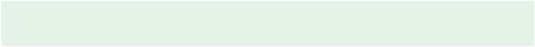

Rabbit sexing
Sexing is the process of identifying the sex of the rabbit. Sexing rabbits is essential
for managing breeding and ensuring the proper care of rabbits. Table 8.2 shows a
guide on differentiating between male and female rabbits.
Table 8.2: A guide on differentiating between male and female rabbits.
Characteristic
Male rabbit (buck)
Female rabbit
(doe)
Genital part
appearance
Small rounded protrusion (penis) or
testicles, if visible
Slit-like vertical
opening (vulva)
Testicles
Present in mature bucks; pouch-like
Not present
Behaviour
Territorial, may spray urine, more
aggressive
More nurturing, less
aggressive
Size and build
May be slightly larger or muscular
May have a rounder,
wider build
Activity 8.4
1. Pay a visit to your school farm or a nearby rabbit farms, livestock training
and research institutes and perform the following tasks:
(a) Inquire on breeding methods and signs of a pregnant doe;
(b) Study preparation required before and during kindling; and
(c) Observe post-birth care for both doe and kittens.
2. Write a report based on this study.
Exercise 8.3
1. Explain factors affecting breeding in rabbit production.
2. What will happen if a buck is introduced to a doe cage during mating?
3. Describe procedures for sexing in rabbit.
4. Describe the signs of a pregnant doe.
Diseases and parasites control in rabbits
Disease control in rabbits is crucial for maintaining their health and
productivity. Effective disease management involves preventive measures, early
detection, and prompt treatment.